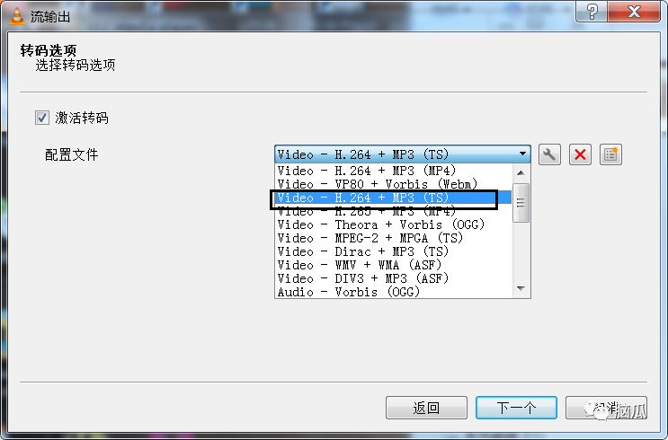

udp-rtp协议
udp-rtp协议的结构
udp由udpHeader和udpBody组成.
udpBody由rtpHeader和rtpBody组成
rtpBody由7个TS Pkt组成.
rtpHeader的数据结构
RTP头结构
+------+--------+-----------------------------------------------------+
| V | 2bits | RTP协议的版本号 |
+------+--------+-----------------------------------------------------+
| | | 填充标志, 如果p=1, 则在该报文的尾部填充一个或多个额 |
| P | 1bit | 外的八位组, 它们不是有效载荷的一部分 |
+------+--------+-----------------------------------------------------+
| X | 1bit | 扩展位置, 如果x=1, 则在RTP报头后跟一个扩展报头 |
+------+--------+-----------------------------------------------------+
| CC | 4bits | CSRC计数器, 指示CSRC标识符的个数 |
+------+--------+-----------------------------------------------------+
| M | 1bit | 标记, 对于视频:标记一帧的结束. 对于音频:标记会话开始|
+------+--------+-----------------------------------------------------+
| | | 用于说明RTP报文中有效载荷的类型, 如GSM音频,JPEM图像 |
| PT | 7bits | 等, 在流媒体中大部分是用来区分音频流和视频流的, 这样|
| | | 便于客户端进行解析 |
+------+--------+-----------------------------------------------------+
| | | 用于标识发送者所发送的RTP报文的序列号,每发送一个报 |
| | | 文,序列号增1.这个字段当下层的承载协议用UDP的时候,网 |
|序列号| 16bits | 络状况不好的时候可以用来检查丢包.同时出现网络抖动的 |
| | | 情况可以用来对数据进行重新排序,序列号的初始值是随机 |
| | | 的,同时音频包和视频包的sequence是分别记数的. |
+------+--------+-----------------------------------------------------+
| | | 记录了该包中数据的第一个字节的采样时刻.在一次会话开 |
|时间戳| 32bits | 始时,时间戳初始化成一个初始值.即使在没有信号发送时, |
| | | 时间戳的数值也要随时间而不断地增加. |
+------+--------+-----------------------------------------------------+
| | | 同步源就是指RTP包流的来源.在同一个RTP会话中不能有两 |
|同步源| 32bits | 个相同的SSRC值.该标识符是随机选取的 RFC1889推荐了MD5|
|标识符| | 随机算法 |
+------+--------+-----------------------------------------------------+
固定占用12个字节, 具体释义已经标记的很清楚了.
这次的例子是mpegTS, 所以它的头也了解一下, 不过没有对其头进行解析.
请看图(图片摘自网络):
由rtp的结构可以解析出其数据啦
//***************************************************************
// @file: udpParser.c
// @author: dingfang
// @date 2019-03-11 11:25:21
//***************************************************************
#include <stdio.h>
#include <stdlib.h>
#include <string.h>
#include <sys/types.h>
#include <sys/socket.h>
#include <stdint.h>
#include <bits/sockaddr.h>
#include <netinet/in.h>
#include <arpa/inet.h>
#include <netdb.h>
#include <unistd.h>
#include <error.h>
#pragma pack(1)
#define INVALID_SOCKET (-1)
#define RECV_DATA_SIZE 10240
typedef struct _T_RTP_FIXED_HEADER
{
/* byte0 */
unsigned char version: 2;
unsigned char extensizon: 1;
unsigned char padding: 1;
unsigned char strLen: 4;
/* byte 1 */
unsigned char payload: 7;
unsigned char marker: 1;
/* bytes 2, 3 */
unsigned short seqNo;
/* bytes 4-7 */
unsigned int timestamp;
/* bytes 8-11 */
unsigned int ssrc;
}RTP_FIXED_HEADER_T;
typedef struct _T_MpegTS_FIXED_HEADER
{
unsigned char syncType: 8;
unsigned char transportErrorIndicator: 1;
unsigned char payloadUnitStartIndicator: 1;
unsigned char transportPriority: 1;
unsigned PID: 13;
unsigned scramblingControl: 2;
unsigned adaptationFieldExist: 2;
unsigned continuityCounter: 4;
}MpegTS_FIXED_HEADER_T;
void switchPayload(char payload, char *payloadStr)
{
switch (payload)
{
case 0:
case 1:
case 2:
case 3:
case 4:
case 5:
case 6:
case 7:
case 8:
case 9:
case 10:
case 11:
case 12:
case 13:
case 14:
case 15:
case 16:
case 17:
case 18: sprintf(payloadStr, "Audio"); return;
case 31: sprintf(payloadStr, "H.261"); return;
case 32: sprintf(payloadStr, "MPV"); return;
case 33: sprintf(payloadStr, "MP2T"); return;
case 34: sprintf(payloadStr, "H.263"); return;
case 96: sprintf(payloadStr, "H.264"); return;
default: sprintf(payloadStr, "other"); return;
}
}
void mpegTSprocess(char *rtpData, int rtpDataSize, FILE *myout)
{
MpegTS_FIXED_HEADER_T mpegtsHeader;
int i;
for (i = 0; i < rtpDataSize; i += 188)
{
if (rtpData[i] != 0x47)
{
fprintf(myout, " [MPEGTS Pkt] count: %d\n", i);
break;
}
//fprintf(myout, " [MPEGTS Pkt]\n");
}
if (i == rtpDataSize)
{
fprintf(myout, " [MPEGTS Pkt] count: %d\n", i / 188);
}
return ;
}
int initSocket(int port)
{
int serSocket = socket(AF_INET, SOCK_DGRAM, IPPROTO_UDP);
if (serSocket == INVALID_SOCKET)
{
printf("socket error !");
return -1;
}
struct sockaddr_in serAddr;
serAddr.sin_family = AF_INET;
serAddr.sin_port = htons(port);
serAddr.sin_addr.s_addr = htonl(INADDR_ANY);
if (bind(serSocket, (struct sockaddr *)&serAddr, sizeof(serAddr)) == -1)
{
printf("bind error");
close(serSocket);
return -1;
}
return serSocket;
}
int udpParser(int port)
{
FILE *myout = stdout;
FILE *fp = fopen("./out_udpParse.ts", "wb+");
int serSocket = initSocket(port);
struct sockaddr_in remoteAddr;
int nAddrLen = sizeof(remoteAddr);
int parseMpegTS = 1;
int cnt = 0;
char recvData[RECV_DATA_SIZE] = { 0 };
while (1)
{
int pktsize = recvfrom(serSocket, recvData, RECV_DATA_SIZE, 0, (struct sockaddr *)&remoteAddr, &nAddrLen);
if (pktsize > 0)
{
char payloadStr[10] = { 0 };
RTP_FIXED_HEADER_T rtpHeader;
int rtpHeaderSize = sizeof(RTP_FIXED_HEADER_T);
memcpy((void *)&rtpHeader, recvData, rtpHeaderSize);
char payload = rtpHeader.payload;
switchPayload(payload, payloadStr);
unsigned int timestamp = ntohl(rtpHeader.timestamp);
unsigned int seqNo = ntohs(rtpHeader.seqNo);
fprintf(myout, "[RTP Pkt] %5d| %5s| %10u| %5d| %5d|\n", cnt, payloadStr, timestamp, seqNo, pktsize);
char *rtpData = recvData + rtpHeaderSize;
int rtpDataSize = pktsize - rtpHeaderSize;
fwrite(rtpData, rtpDataSize, 1, fp);
if (parseMpegTS != 0 && payload == 33)
{
mpegTSprocess(rtpData, rtpDataSize, myout);
}
if (cnt == 15)
{
break;
}
++cnt;
}
}
close(serSocket);
fclose(fp);
return 0;
}
int main(void)
{
udpParser(8877);
return 0;
}
通过udp编程可以直接获取到udp的Body, 再对body进行解析, 就能获取到对应的数据.
运行程序后等待客户端推流.
我是用的是VLC media player.
具体使用步骤:
首先点击左上角的媒体, 找到'流' 点进去.
点击添加按钮. 添加本地的ts文件.
添加完文件后, 点击下面的选择串流.
这个直接 点击下一个.
在这选择RTP / MPEG Transport Stream
在这里输入推流的地址和端口, 名字随意.
在这选择视频和音频格式, 我的应该选择这个, 如果你用的和我一样的文件, 那么也应该选择这个

输出结果
count就是每个包里面包含7个TS Pkt(代码里面可以看出)